<!-- section-callback start -->
<section class="section-callback">
    <div class="container section-callback__container">
        <div class="section-callback__left">
            <div class="subtitle section-left__subtitle">Promix в вашем городе</div>
            
        </div>
    </div>
    <!-- container end -->
</section>
<!-- section-callback end -->